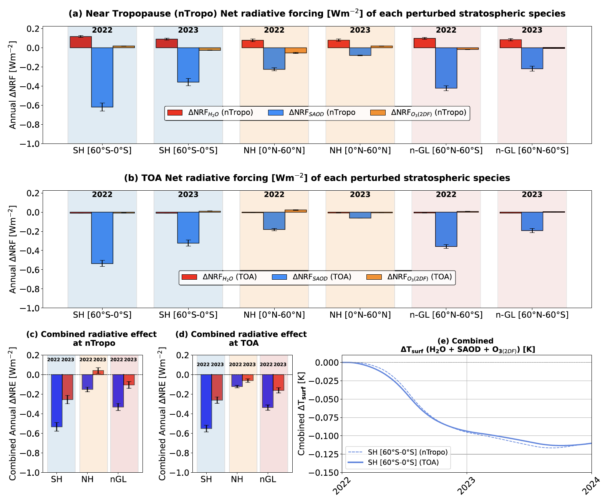
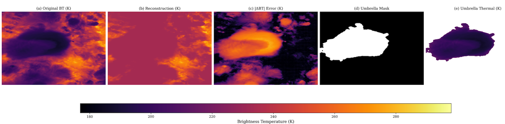
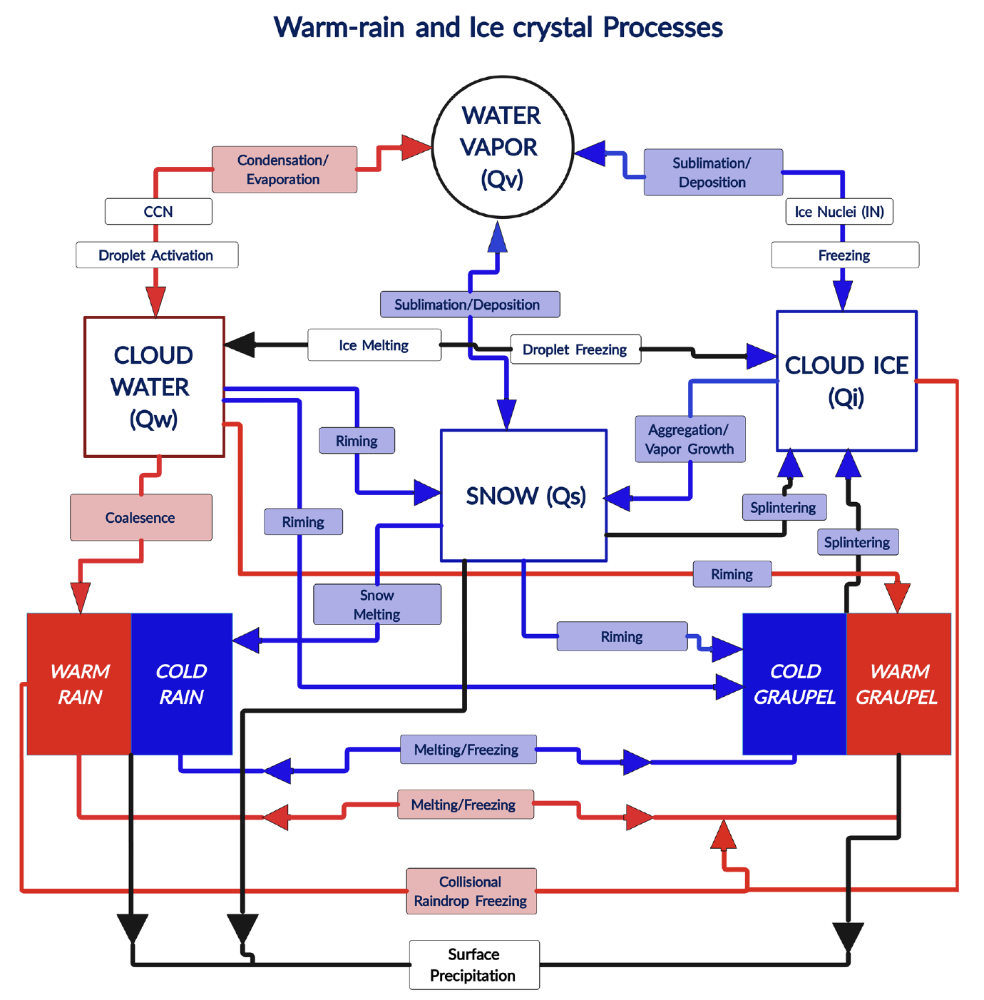
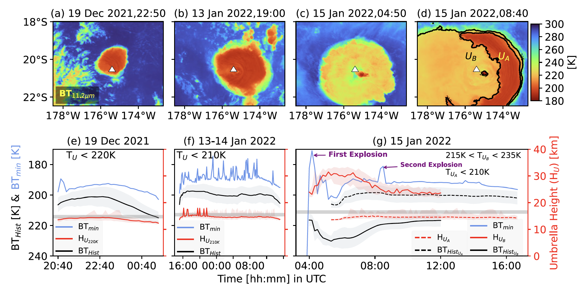

Publications
Peer-reviewed journal articles, manuscripts under review, and featured work.
Peer-Reviewed Publications
- A global decline in atmospheric dust during the 21st century. New 2026
Ashok Kumar Gupta, J. F. Kok, V. Amiridis, A. Gkikas, K. Rizos, E. Proestakis, S. Logothetis, E. Marinou & C. Pérez García-Pando.
Science Advances (2026; accepted with minor revision). Preprint - Desert dust exerts a substantial longwave radiative forcing missing from climate models. New 2026
J. F. Kok, Ashok Kumar Gupta, A. T. Evan, A. A. Adebiyi, S. Albani, Y. Balkanski, R. Checa-Garcia, P. R. Colarco, D. Hamilton, Y. Huang, A. Ito, M. Klose, L. Li, N. M. Mahowald, R. L. Miller, V. Obiso, C. Pérez García-Pando, A. Rocha Lima & J. Wan.
Nature Communications (2026). Preprint - The January 2022 Hunga eruption cooled the Southern Hemisphere in 2022 and 2023.
Ashok Kumar Gupta, T. Mittal, K. Fauria, R. Bennartz & J. Kok.
Communications Earth & Environment, 1:240 (2025). DOI - Eruption chronology of the December 2021 to January 2022 Hunga Tonga–Hunga Ha'apai eruption sequence.
Ashok Kumar Gupta, R. Bennartz, K. E. Fauria & T. Mittal.
Communications Earth & Environment (2022). DOI - The microphysics of warm-rain and ice-crystal processes of precipitation in simulated continental convective storms.
Ashok Kumar Gupta, V. T. J. Phillips, D. Waman, S. Patade, A. Deshmukh, A. Jadav & A. Bansemer.
Communications Earth & Environment (2023). DOI - Ash deposition triggers phytoplankton blooms at Nishinoshima Volcano, Japan.
L. Kelly, K. Fauria, T. Mittal, J. El Kassar, R. Bennartz, D. Nicholson, A. Subramaniam & Ashok Kumar Gupta.
Geochemistry, Geophysics, Geosystems, 24(11): e2023GC010914 (2023). - Simultaneous creation of a large vapor plume and pumice raft by the 2021 Fukutoku-Oka-no-Ba eruption.
K. E. Fauria, M. Jutzeler, T. Mittal, Ashok Kumar Gupta, L. Kelly, J. Rausch, R. Bennartz, B. Delbridge & L. Retailleau.
Earth and Planetary Science Letters, 118076 (2023). - The influence of multiple biological ice-nucleating groups on mixed-phase clouds during MC3E.
S. Patade, D. Waman, A. Deshmukh, A. Jadav, Ashok Kumar Gupta, V. T. J. Phillips, A. Bansemer, J. Carlin & A. Ryzhkov.
Atmospheric Chemistry and Physics, 22(18): 12055–12075 (2022). - Dependencies of secondary ice production on cloud-top temperature in a continental convective storm.
D. Waman, S. Patade, A. Jadav, A. Deshmukh, Ashok Kumar Gupta, V. T. J. Phillips, A. Bansemer & P. J. DeMott.
Journal of the Atmospheric Sciences, 79(12): 3375–3404 (2022). - Multi-year diurnal variations of TOA cloud radiative forcing over the tropics from Megha-Tropiques-ScaRaB/3.
Ashok Kumar Gupta, K. Rajeev, E. V. Davis, M. K. Mishra & A. K. M. Nair.
Climate Dynamics, 55: 3289–3306 (2020). DOI - Enhanced daytime occurrence of upper-tropospheric clouds over land and ocean.
Ashok Kumar Gupta, K. Rajeev, S. Sijikumar & A. K. M. Nair.
Atmospheric Research, 201: 133–143 (2018). - Day–night changes in low-altitude cloud properties over stratocumulus-dominated oceans.
Ashok Kumar Gupta, K. Rajeev & S. Sijikumar.
Journal of Atmospheric and Solar-Terrestrial Physics, 161: 118–126 (2017). DOI - Diurnal variation of shortwave aerosol direct radiative effect over dust-dominated regions.
M. K. Mishra, Ashok Kumar Gupta & K. Rajeev.
IEEE Trans. Geosci. Remote Sens., 55: 6610–6616 (2017). DOI
Under Review / Manuscripts in Preparation
- Organization of ice-multiplication mechanisms among basic cloud types — Part I: Validation and analysis of the control simulations.
A. Deshmukh, D. Waman, S. Patade, M. Gautam, V. T. J. Phillips, A. Bansemer, Ashok Kumar Gupta, P. Connolly, G. McFarquhar, P. J. DeMott, J. Fan, Y. Lin, J. Schrod & H. Bingemer.
Under review (Journal of the Atmospheric Sciences). - Organization of ice-multiplication mechanisms among basic cloud types — Part II: Sensitivity tests.
A. Deshmukh, D. Waman, S. Patade, Ashok Kumar Gupta & V. T. J. Phillips.
Under review (Journal of the Atmospheric Sciences). - Observational evidence of enhanced stabilization tendency due to tropical thin cirrus longwave heating.
Ashok Kumar Gupta & R. Bennartz.
Revising for npj Climate and Atmospheric Science. - Deep learning-based temporal tracking of volcanic umbrella cloud properties from spaceborne sensors: The 2022 Hunga and 2024 Ruang eruptions.
Ashok Kumar Gupta & R. Bennartz.
Manuscript ready for submission (Remote Sensing of Environment). - Model data from the AeroCom Dust Radiative Forcing from reconstructed dust changes since pre-industrial times experiment.
O. W. Haugvaldstad, J. Kok, T. Storelvmo, M. Schulz, …, Ashok Kumar Gupta, et al.
Under review (Geophysical Research Letters).
Featured Publications

Hunga eruption cooled the Southern Hemisphere
Net cooling of −0.55 W m⁻² from sulfate aerosols drove a −0.10 K SH temperature anomaly — contradicting warming projections.
Measurable volcanic cooling challenges climate projections.

ML-based volcanic umbrella cloud detection
ConvLSTM auto-encoder detects umbrella-cloud tops at sub-km resolution, thermal errors below 2 K, 98% of 2024 Ruang plume captured.
Automated ML for rapid ash-hazard alerts.

Warm vs. cold rain in continental storms
Warm-rain processes account for ~80% of surface precipitation in very warm-based clouds.
Cloud-base warming shifts precipitation to warm-rain.

Volcanic umbrella clouds: Hunga Tonga
Unprecedented umbrella heights (~31 km), two ice-rich layers, volumetric flow of ~5.0 × 10¹¹ m³ s⁻¹.
Record-high volcanic clouds redefine eruption science.